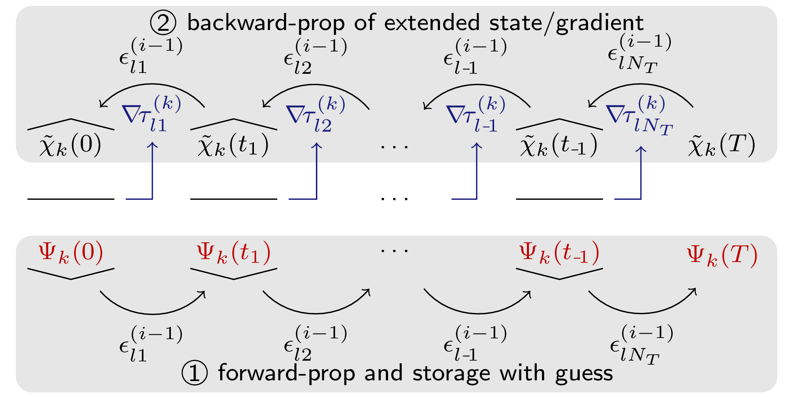

Background
The GRAPE methods minimizes an optimization functional of the form
\[\begin{equation}\label{eq:grape-functional} J(\{ϵ_l(t)\}) = J_T(\{|Ψ_k(T)⟩\}) + λ_a \, \underbrace{∑_l \int_{0}^{T} g_a(ϵ_l(t)) \, dt}_{=J_a(\{ϵ_l(t)\})} + λ_b \, \underbrace{∑_k \int_{0}^{T} g_b(|Ψ_k(t)⟩) \, dt}_{=J_b(\{|Ψ_k(t)⟩\})}\,, \end{equation}\]
where $\{ϵ_l(t)\}$ is a set of control functions defined between the initial time $t=0$ and the final time $t=T$, and $\{|Ψ_k(t)⟩\}$ is a set of "trajectories" evolving from a set of initial states $\{|\Psi_k(t=0)⟩\}$ under the controls $\{ϵ_l(t)\}$. The primary focus is on the final-time functional $J_T$, but running costs $J_a$ (weighted by $λ_a$) may be included to penalize certain features of the control field. In principle, a state-dependent running cost $J_b$ weighted by $λ_b$ can also be included (and will be discussed below), although this is currently not fully implemented in GRAPE.jl.
The defining assumptions of the GRAPE method are
The control fields $\epsilon_l(t)$ are piecewise-constant on the $N_T$ intervals of a time grid $t_0 = 0, t_1, \dots t_{N_T} = T$. That is, we have a vector of pulse values with elements $\epsilon_{nl}$. We use the double-index
nl, for the value of the $l$'th control field on the $n$'th interval of the time grid.The states $\ket{\Psi_k(t)}$ evolve under an equation of motion of the form
\[\begin{equation}\label{eq:tdse} i \hbar \frac{\partial \ket{\Psi_k(t)}}{\partial t} = \hat{H}_k(\{\epsilon_l(t)\}) \ket{\Psi_k(t)}\,, \end{equation}\]
with $\hbar = 1$.
This includes the Schrödinger equation, but also the Liouville equation for open quantum systems. In the latter case $\ket{\Psi_k}$ is replaced by a vectorized density matrix, and $\hat{H}_k$ is replaced by a Liouvillian (super-) operator describing the dynamics of the $k$'th trajectory. The crucial point is that Eq. \eqref{eq:tdse} can be solved analytically within each time interval as
\[\begin{equation}\label{eq:time-evolution-op} \def\ii{\mathrm{i}} \ket{\Psi_k(t_{n+1})} = \underbrace{\exp\left[-\ii \hat{H}_{kn} dt_n \right]}_{=\hat{U}^{(k)}_{n}} \ket{\Psi_k(t_n)}\,, \end{equation}\]
where $\hat{H}_{kn} = \hat{H}_k(\{\epsilon_{nl}\})$ is $\hat{H}_k(\{\epsilon_l(t)\})$ evaluated at the midpoint of the $n$'th interval (respectively at $t=0$ and $t=T$ for $n=1$ and $n=N_T$), and with the time step $dt_n = (t_n - t_{n-1})$.
These two assumptions allow to analytically derive the gradient $(\nabla J)_{nl} \equiv \frac{\partial J}{\partial \epsilon_{nl}}$. The initial derivation of GRAPE by Khaneja et al. [1] focuses on a final-time functional $J_T$ that depends of the overlap of each forward-propagated $|\Psi_k(T)⟩$ with a target state $|\Psi^{\text{tgt}}_k(T)⟩$ and updates the pulse values $\epsilon_{nl}$ directly in the direction of the negative gradient. Improving on this, de Fouquières et al. [3] showed that using a quasi-Newton method to update the pulses based on the gradient information leads to a dramatic improvement in convergence and stability. Furthermore, Goodwin and Kuprov [4] improved on the precision of evaluating the gradient of a local time evolution operator, which is a critical step in the GRAPE scheme. Finally, Goerz et al. [5] generalized GRAPE to arbitrary functionals of the form \eqref{eq:grape-functional}, bridging the gap to automatic differentiation techniques [6–8] by introducing the technique of "semi-automatic differentiation". This most general derivation is the basis for the implementation in GRAPE.jl.
Below, we derive the GRAPE scheme here in full generality. This implies keeping track of a lot of indices:
- $k$: the index over the different trajectories, i.e. the states $|\Psi_k(t)⟩$ whose time evolution contribute to the functional
- $l$: the index over the different control functions $\epsilon_l(t)$ that the Hamiltonian/Liouvillian may depend on
- $n$: The index over the intervals of the time grid
Most equations can be simplified by not worrying about $k$ or $l$: If there multiple controls, they are concatenated into a single vector of control values with a double-index $nl$. We really only need to keep track of $n$; the gradient values related to a $\epsilon_{nl}$ with a particular $l$ are somewhat obvioulsly obtained by using a particular $\epsilon_l(t_n)$. Likewise, all trajectories contribute equally to the gradients, so we just have a sum over the $k$ index.
We can further simplify by considering only final-time functionals $J_T(\{|\Psi_k(T)⟩\})$. Running costs $J_a(\{ϵ_l(t)\})$ are quite straightforward to add (just take the deriverive w.r.t. the values $ϵ_{nl}$), and running costs $J_b(\{|Ψ_k(t)⟩\})$ are too complicated to consider in any kind of "simplified" scheme.
In essence, then, the GRAPE scheme that is implemented here can then be concisely summarized, cf. Eq. \eqref{eq:grad-at-T-U}, as
\[\begin{equation} \frac{\partial J_T}{\partial \epsilon_{n}} = -2 \Re \underbrace{% \underbrace{\bigg\langle \chi(T) \bigg\vert \hat{U}_{N_T} \dots \hat{U}_{n+1} \bigg \vert}_{\equiv \bra{\chi(t_n)}\;\text{(bw. prop.)}} \frac{\partial \hat{U}_n}{\partial \epsilon_{n}} }_{\equiv \bra{\chi^\prime(t_{n-1})}} \underbrace{\bigg \vert \hat{U}_{n-1} \dots \hat{U}_1 \bigg\vert \Psi(t=0) \bigg\rangle}_{\equiv \ket{\Psi(t_{n-1})}\;\text{(fw. prop.)}}\,, \end{equation}\]
with the boundary condition, cf. Eq. \eqref{eq:chi},
\[\begin{equation} |\chi(T)⟩ \equiv - \frac{\partial J_T}{\partial ⟨\Psi(T)|}\,. \end{equation}\]
The gradient-state $|\chi^\prime(t_{n-1})⟩$ is obtained either via an expansion of $\hat{U}_n$ into a Taylor series, or (by default), by backward-propagating an extended state $|\tilde\chi(t)⟩$ with gradient information [4]. The resulting scheme is illustrated in Fig. 1.
Prerequisite: Wirtinger derivatives and matrix calculus
Even though we are seeking the derivative of the real-valued functional $J$ with respect to the real-valued parameter $\epsilon_{nl}$, the functional still involves complex quantities via $|\Psi_k(t)⟩$ and $\hat{H}$ in Eq. \eqref{eq:tdse}. In order to apply the chain rule in the derivation of the gradient, we will have to clarify the notion of derivatives in the context of complex numbers, as well as derivatives with respect to vectors ("matrix calculus").
Derivatives w.r.t. complex scalars
To illustrate, let's say we introduce intermediary scalar variables $z_k \in \mathbb{C}$ in the functional, $J(\{\epsilon_{nl}\}) \rightarrow J(\{z_k(\{\epsilon_{nl}\})\})$, with $J, \epsilon_{nl} \in \mathbb{R}$.
In principle, one must separate the $z_k$ into real and imaginary part as independent variables, $J = J(\{\Re[z_k]\}, \{\Im[z_k]\})$, resulting in
\[\begin{equation} \label{eq:grad_zj_real_imag} (\nabla J)_{nl} \equiv \frac{\partial J}{\partial \epsilon_{nl}} = \sum_k \left( \frac{\partial J}{\partial \Re[z_k]} \frac{\partial \Re[z_k]}{\partial \epsilon_{nl}} + \frac{\partial J}{\partial \Im[z_k]} \frac{\partial \Im[z_k]}{\partial \epsilon_{nl}} \right)\,. \end{equation}\]
An elegant alternative is to introduce Wirtinger derivatives,
\[\begin{align}% \label{eq:wirtinger1} \frac{\partial J}{\partial z_k} &\equiv \frac{1}{2} \left( \frac{\partial J}{\partial \Re[z_k]} -\ii \frac{\partial J}{\partial \Im[z_k]} \right)\,, \\ \label{eq:wirtinger2} \frac{\partial J}{\partial z_k^*} &\equiv \frac{1}{2} \left( \frac{\partial J}{\partial \Re[z_k]} +\ii \frac{\partial J}{\partial \Im[z_k]} \right) = \left(\frac{\partial J}{\partial z_k}\right)^*\,, \end{align}\]
which instead treats $z_k$ and the conjugate value $z_k^*$ as independent variables, so that
\[\begin{equation}% \label{eq:wirtinger_chainrule} \frac{\partial J}{\partial \epsilon_{nl}} = \sum_k \left( \frac{\partial J}{\partial z_k} \frac{\partial z_k}{\partial \epsilon_{nl}} + \frac{\partial J}{\partial z_k^*} \frac{\partial z_k^*}{\partial \epsilon_{nl}} \right) = 2 \Re \sum_k \frac{\partial J}{\partial z_k} \frac{\partial z_k}{\partial \epsilon_{nl}} \,. \end{equation}\]
So, we have a simple chain rules, modified only by $2 \Re[…]$, where we can otherwise "forget" that $z_k$ is a complex variable. The fact that $J \in \mathbb{R}$ guarantees that $z_k$ and $z_k^*$ can only occur in such ways that we don't have to worry about having "lost" $z_k^*$.
The derivative of the complex value $z_k$ with respect to the real value $\epsilon_{nl}$ is defined straightforwardly as
\[\begin{equation} \frac{\partial z_k}{\partial \epsilon_{nl}} \equiv \frac{\partial \Re[z_k]}{\partial \epsilon_{nl}} + \ii \frac{\partial \Im[z_k]}{\partial \epsilon_{nl}}\,. \end{equation}\]
Derivatives w.r.t. complex vectors
We can now go one step further and allow for intermediate variables that are complex vectors instead of scalars, $J(\{\epsilon_{nl}\}) \rightarrow J(\{|\Psi_k(\{\epsilon_{nl}\})⟩\})$. Taking the derivative w.r.t. a vector puts us in the domain of matrix calculus. Fundamentally, the derivative of a scalar with respect to a (column) vector is a (row) vector consisting of the derivatives of the scalar w.r.t. the components of the vector, and the derivative of a vector w.r.t. a scalar is the obvious vector of derivatives.
Usually, matrix calculus assumes real-valued vectors, but the extension to complex vectors via the Wirtinger derivatives discussed above is a relatively straightforward. The use of Dirac ("braket") notation helps tremendously here: $|\Psi_k⟩$ describes a complex column vector, and $⟨\Psi_k|$ describes the corresponding row vector with complex-conjugated elements. These can take the place of $z_k$ and $z_k^*$ in the Wirtinger derivative. Consider, e.g.,
\[\begin{equation}\label{eq:Jsm} J(\{|\Psi_k⟩\}) = \sum_k \vert \langle \Psi_k \vert \Psi_k^{\text{tgt}} \rangle \vert^2 = \sum_k \langle \Psi_k \vert \Psi_k^{\text{tgt}} \rangle \langle \Psi_k^{\text{tgt}} \vert \Psi_k \rangle\,, \end{equation}\]
for a fixed set of "target states" $|\Psi_k^{\text{tgt}}⟩$.
The derivative $\partial J/\partial |\Psi_k⟩$ is
\[\begin{equation}\label{eq:dJ_dKet} \frac{\partial J}{\partial |\Psi_k}⟩ = \langle \Psi_k \vert \Psi_k^{\text{tgt}} \rangle \langle\Psi_k^{\text{tgt}}\vert\,, \end{equation}\]
in the same sense as Eq. \eqref{eq:wirtinger1}. We simply treat $|\Psi_k⟩$ and $⟨\Psi_k|$ as independent variables corresponding to $z_k$ and $z_k^*$. Note that the result is a "bra", that is, a co-state, or row vector. The braket notation resolves the question of "layout conventions" in matrix calculus in favor of the "numerator layout". Consequently, we also have a well-defined derivative w.r.t. the co-state:
\[\begin{equation} \frac{\partial J}{\partial ⟨\Psi_k|} = \langle \Psi_k^{\text{tgt}} \vert \Psi_k \rangle \vert\Psi_k^{\text{tgt}}\rangle\,, \end{equation}\]
which we can either get explicitly from Eq. \eqref{eq:Jsm}, differentiating w.r.t. $|\Psi_k⟩$ as an independent parameter and changing the order of the factors, or implicitly by taking the conjugate transpose of Eq. \eqref{eq:dJ_dKet}.
For the full chain rule of a functional $J(\{|\Psi_k(\{\epsilon_{nl}\})⟩\})$, we thus find
\[\begin{equation}\label{eq:grad-via-chi1} (\nabla J)_{nl} \equiv \frac{\partial J}{\partial \epsilon_{nl}} = 2 \Re \sum_k \left( \frac{\partial J}{\partial |\Psi_k⟩} \frac{\partial |\Psi_k⟩}{\partial \epsilon_{nl}} \right)\,. \end{equation}\]
With the definition in Eq. \eqref{eq:wirtinger1}, this corresponds directly to the scalar
\[\begin{equation} \frac{\partial J}{\partial \epsilon_{nl}} = \sum_{km} \left( \frac{\partial J}{\partial \Re[\Psi_{km}]} \frac{\partial \Re[\Psi_{km}]}{\partial \epsilon_{nl}} + \frac{\partial J}{\partial \Im[\Psi_{km}]} \frac{\partial \Im[\Psi_{km}]}{\partial \epsilon_{nl}} \right)\,, \end{equation}\]
where the complex scalar $\Psi_{km}$ is the $m$'th element of the $k$'th vector, and corresponds to the $z_k$ in Eq. \eqref{eq:wirtinger_chainrule}.
In open quantum systems, where the state is described by a density matrix $\hat{\rho}$, it can be helpful to adopt the double-braket notation $\langle\!\langle \hat{\rho}_1 \vert \hat{\rho}_2 \rangle\!\rangle \equiv \tr[\hat{\rho}_1^\dagger \hat{\rho}_2]$, respectively to keep track of normal states $\hat{\rho}$ (corresponding to $|\Psi⟩$) and adjoint states $\hat{\rho}^\dagger$ (corresponding to $⟨\Psi|$), even when $\hat{\rho}$ is Hermitian and thus $\hat{\rho} = \hat{\rho}^\dagger$. For numerical purposes, density matrices are best vectorized by concatenating the columns of $\hat{\rho}$ into a single column vector $\vec{\rho}$. Thus, we do not have be concerned with a separate definition of derivatives w.r.t. density matrices.
Gradients for final-time functionals
For simplicity, we consider a functional defined entirely at final time $T$, the $J_T$ term in Eq. \eqref{eq:grape-functional}. Since $J_T$ depends explicitly on $\{|\Psi_k(T)⟩\}$ and only implicitly on $\{\epsilon_{nl}\}$, we can use the complex chain rule in Eq. \eqref{eq:grad-via-chi1}.
Further, we define a new state
\[\begin{equation}\label{eq:chi} |\chi_k(T)⟩ \equiv - \frac{\partial J_T}{\partial ⟨\Psi_k(T)|} \end{equation}\]
The minus sign in this definition is arbitrary, and is intended solely to match an identical definition in Krotov's method, the most direct alternative to GRAPE. Since $|\chi_k(T)⟩$ does not depend on $\epsilon_{nl}$, we can pull forward the derivative $\partial / \partial \epsilon_{nl}$ in Eq. \eqref{eq:grad-via-chi1}, writing it as
\[\begin{equation}\label{eq:grad-at-T} (\nabla J_T)_{nl} = \frac{\partial J_T}{\partial \epsilon_{nl}} = - 2 \Re \sum_k \frac{\partial}{\partial \epsilon_{nl}} \langle \chi_k(T) \vert \Psi_k(T)\rangle\,. \end{equation}\]
We end up with the gradient of $J_T$ being the derivative of the overlap of two states $|\chi_k(T)⟩$ and $|\Psi_k(T)⟩$ at final time $T$.
Next, we make use the assumption that the time evolution is piecewise constant, so that we can use the time evolution operator defined in Eq. \eqref{eq:time-evolution-op} to write $|\Psi_k(T)⟩$ as the time evolution of an initial state $\Psi_k(t=0)$, the initial_state of the $k$'th trajectory in the QuantumControl.ControlProblem. That is, $|\Psi_k(T)⟩ = \hat{U}^{(k)}_{N_T} \dots \hat{U}^{(k)}_1 |\Psi_k(t=0)⟩$ with the time evolution operator $\hat{U}^{(k)}_n$ for the $n$'th time interval of the time grid with $N_T + 1$ time grid points, cf. Eq. \eqref{eq:time-evolution-op}. Plugging this into Eq. \eqref{eq:grad-at-T} immediately gives us
\[\begin{equation}\label{eq:grad-at-T-U} \begin{split} \frac{\partial J_T}{\partial \epsilon_{nl}} &= -2 \Re \sum_k \frac{\partial}{\partial \epsilon_{nl}} \bigg\langle \chi_k(T) \bigg\vert \hat{U}_{N_T}^{(k)} \dots \hat{U}^{(k)}_n \dots \hat{U}^{(k)}_1 \bigg\vert \Psi_k(t=0) \bigg\rangle \\ &= -2 \Re \sum_k \bigg\langle \chi_k(t_{n}) \bigg\vert \frac{\partial \hat{U}^{(k)}_n}{\partial \epsilon_{nl}} \bigg\vert \Psi_k(t_{n-1}) \bigg\rangle \end{split} \end{equation}\]
with $|\chi_k(t_{n})⟩ = U^{\dagger (k)}_{n+1} \dots U^{\dagger(k)}_{N_T} |\chi_k(T)⟩$, i.e., a backward-propagation of the state given by Eq. \eqref{eq:chi} with the adjoint Hamiltonian or Liouvillian and $|\Psi_k(t_{n-1})⟩ = \hat{U}^{(k)}_{n-1}\dots \hat{U}^{(k)}_1 |\Psi_k(0)⟩$, i.e., a forward-propagation of the initial state of the $k$'th trajectory.
Derivative of the time-evolution operator
The last missing piece for evaluating the gradient in Eq. \eqref{eq:grad-at-T-U} is the derivative of the time evolution operator $\hat{U}_n^{(k)}$ for the current time interval $n$. The operator $\frac{\partial \hat{U}_n^{(k)}}{\partial \epsilon_{nl}}$ could either act to the right, being applied to $|\Psi_k(t_{n-1})⟩$ during the forward propagation, or it (or rather it's conjugate transpose) could act to the left, being applied to $|\chi_k(t_n)⟩$ during the backward propagation. For reasons that will be explained later on, it is numerically more efficient to include it in the backward propagation. Thus, we are given a state $|\chi_k(t_{n})⟩$ and must then numerically obtain the state
\[\begin{equation}\label{eq:U-deriv} |\chi^\prime_{kl}(t_{n-1})⟩ \equiv \frac{\partial \hat{U}^{\dagger(k)}_n}{\partial \epsilon_{nl}} |\chi_k(t_n)⟩ = \frac{\partial}{\partial \epsilon_{nl}} \exp\left[-\ii \hat{H}^{\dagger}_{k}(\{\epsilon_{nl}\}) dt^{(-)}_n \right] |\chi_k(t_n)⟩\,. \end{equation}\]
Note the dagger and the negative time step $dt^{(-)}_n = (t_{n-1} - t_{n})$ — in lieu of changing the sign of the imaginary unit $\ii$ — to account for the fact that we are doing a backward-propagation, cf. the corresponding forward-propagation in Eq. \eqref{eq:time-evolution-op}. Of course, for a standard Schrödinger equation, $\hat{H}_{kn}^\dagger = \hat{H}_{kn}$, and then the negative time step is the only difference between backward and forward propagation; but, in general, we also allow for non-Hermitian Hamiltonians or Liouvillians where it is important to use the correct (adjoint) operator.
Thus, Eq. \eqref{eq:grad-at-T-U} turns into
\[\begin{equation}\label{eq:grad-via-chi-prime} \frac{\partial J_T}{\partial \epsilon_{nl}} = -2 \Re \sum_k \bigg \langle \chi^\prime_{kl}(t_{n-1}) \bigg\vert \Psi_k(t_{n-1}) \bigg \rangle\,. \end{equation}\]
Or, equivalently, if we had let $\frac{\partial \hat{U}_n^{(k)}}{\partial \epsilon_{nl}}$ act to the right,
\[\begin{equation} \frac{\partial J_T}{\partial \epsilon_{nl}} = -2 \Re \sum_k \bigg \langle \chi_{kl}(t_{n}) \bigg\vert \Psi^{\prime}_k(t_{n}) \bigg \rangle\,. \end{equation}\]
with $|\Psi^{\prime}_k(t_{n})⟩ \equiv \frac{\partial \hat{U}^{(k)}_n}{\partial \epsilon_{nl}} |\Psi_k(t_{n-1})⟩$.
Taylor expansion
There are several possibilities for evaluating Eq. \eqref{eq:U-deriv}. One method is to expand the exponential into a Taylor series [2, Eq. (20)]
\[\begin{equation}\label{eq:taylor-op} \frac{\partial \hat{U}^{\dagger(k)}_n}{\partial \epsilon_{nl}} = \sum_{m=1}^{\infty} \frac{\left(-\ii \hat{H}^{\dagger}_{kn} dt^{(-)}_n\right)^m}{m!} \sum_{m^\prime=0}^{m-1} {\hat{H}^{\dagger}_{kn}}^{\!\!m^\prime} \hat{\mu}_{lkn}^{\dagger} {\hat{H}^{\dagger}_{kn}}^{\!\!m-m^\prime-1} \end{equation}\]
with $\hat{H}_{kn} \equiv \hat{H}_{k}(\{\epsilon_{nl}\})$ and $\hat{\mu}_{lkn} \equiv \frac{\partial \hat{H}_{kn}}{\partial \epsilon_{nl}}$.
In practice, Eq. \eqref{eq:taylor-op} is best evaluated recursively, while being applied to $|\chi_k(t_n)⟩$:
\[\begin{equation} \ket{\chi^\prime_{kl}(t_{n-1})} = \sum_{m=1}^{\infty} \frac{\left(-\ii \, dt_n^{(-)}\right)^m}{m!} \ket{\Phi^{(lkn)}_m}\,, \end{equation}\]
with
\[\begin{equation} \begin{split} \ket{\Phi^{(lkn)}_1} &= \hat{\mu}_{lkn}^{\dagger} \ket{\chi_k(t_n)}\,, \\ \ket{\Phi^{(lkn)}_m} &= \hat{\mu}_{lkn}^{\dagger} {\hat{H}^{\dagger}_{kn}}^{\!\!m-1} \ket{\chi_k(t_n)} + {\hat{H}^{\dagger}_{kn}} \ket{\Phi^{(lkn)}_{m-1}}\,. \end{split} \end{equation}\]
In GRAPE.jl, Eq. \eqref{eq:U-deriv} can be evaluated via a Taylor expansion as described above by passing gradient_method=:taylor, with further options to limit the maximum order $m$.
As in the general TMIDR, the indices $k$ and $l$ are somewhat superfluous here. In addition, $\hat{\mu}_{lkn} \equiv \frac{\partial \hat{H}_{kn}}{\partial \epsilon_{nl}}$ still depends on $\epsilon_{nl}$ only for non-linear controls. Much more commonly, , for linear Hamiltonians of the form $\hat{H} = \hat{H_0} + \epsilon(t) \hat{\mu}$, $\hat{\mu}$ is just a static control operator. If $\hat{H}$ is a standard Hamiltonian, and thus Hermitian, we can drop the dagger. The time gid is usually uniform, so we can drop the index $n$ from $dt$. Thus, a simplified version of Eq. \eqref{eq:taylor-op} is
\[\begin{equation}\label{eq:taylor-op-simplified} \frac{\partial \hat{U}^{\dagger}_n}{\partial \epsilon_{n}} = \sum_{m=1}^{\infty} \frac{\left(-\ii \hat{H}_{n} dt^{(-)}\right)^m}{m!} \sum_{m^\prime=0}^{m-1} \hat{H}_{n}^{m^\prime} \hat{\mu} {\hat{H}}_{n}^{m-m^\prime-1}\,, \end{equation}\]
with the recursive formula
\[\begin{equation} \begin{split} \ket{\chi^\prime(t_{n-1})} &= \sum_{m=1}^{\infty} \frac{\left(-\ii \, dt^{(-)}\right)^m}{m!} \ket{\Phi_m}\,,\\ \ket{\Phi_1} &= \hat{\mu} \ket{\chi_k(t_n)}\,, \\ \ket{\Phi_m} &= \hat{\mu} {\hat{H}_{n}}^{\!\!m-1} \ket{\chi_k(t_n)} + {\hat{H}_{n}} \ket{\Phi_{m-1}}\,. \end{split} \end{equation}\]
For sufficiently small time steps, one may consider using only the first term in the Taylor series, $|\chi^\prime_{kl}(t_{n-1})⟩ \approx -\ii dt_n^{(-)} |\Phi^{(lkn)}_1⟩$. That is, from Eq. \eqref{eq:grad-via-chi-prime}, we get
\[\begin{equation} \begin{split} \frac{\partial J_T}{\partial \epsilon_{nl}} &\approx 2\,dt_n\,\Im \sum_k \bigg \langle \chi_{kl}(t_{n}) \bigg\vert \frac{\partial \hat{H}_{kn}}{\partial \epsilon_{nl}} \bigg\vert \Psi_k(t_{n-1}) \bigg \rangle \\ &\approx 2\,dt_n\,\Im \sum_k \bigg \langle \chi_{kl}(t_{n}) \bigg\vert \frac{\partial \hat{H}_{kn}}{\partial \epsilon_{nl}} \bigg\vert \Psi_k(t_{n}) \bigg \rangle\,. \end{split} \end{equation}\]
This approximation of the gradient has been used historically, including in GRAPE's original formulation [1], also because it matches optimality conditions derived in a Lagrange-multiplier formalism [9, BorziPRA2002] that pre-dates GRAPE. The derivation via Lagrange multipliers also extends more easily to equations of motion beyond Eq. \eqref{eq:tdse} such as Gross–Pitaevskii equation [10, 11]. However, even though it is considered a "gradient-type" optimization, it is not considered to be within the scope of the GRAPE package (up to the ability to limit that Taylor expansion to first order). The conceptual difference is that these older methods (as well as other "gradient-type" Krotov's method) derive optimality conditions first (via functional derivatives), and the add time discretization to arrive at a numerical scheme. In contrast, GRAPE discretizes first, and then obtains gradients via simple derivatives w.r.t. the pulse values $\epsilon_{nl}$. This concept of "discretize first" is the core concept exploited in GRAPE.jl.
After GRAPE's original formulation [1], it was quickly realized that high-precision gradients are essential for numerical stability and convergence, in particular if the gradient is then used in a quasi-Newton method [2, 3]. Thus, low-order Taylor expansions should be avoided in most contexts.
Shermer gradient
With the need for gradients that are exact to machine precision…
GRAPE scheme
This results in an efficient numerical scheme for evaluating the full gradient shown in Fig. 1. The scheme extends to situations where the functional is evaluated on top of multiple propagated states $\{\vert \Psi_k(t) \rangle\}$ with an index $k$, and multiple controls $\epsilon_l(t)$, resulting in a vector of values $\epsilon_{nl}$ with a double-index $nl$.
 Figure 1: Numerical scheme for the evaluation of the gradient in GRAPE, with semi-automatic differentiation
{kind=link}
Explain why the gradient generator is more efficient in the backward propagation: No need to store extended states.
Semi-automatic differentiation
Same as GRAPE, up to definition of chi. Special cases for overlap functionals and gate functionals.
How "gradients" are implemented in Zygote.
Running costs
Optimizers
Once the gradient has been evaluated, in the original formulation of GRAPE [1], the values $\epsilon_{nl}$ would then be updated by taking a step with a fixed step width $\alpha$ in the direction of the negative gradient, to iteratively minimize the value of the optimization functional $J$. In practice, the gradient can also be fed into an arbitrary gradient-based optimizer, and in particular a quasi-Newton method like L-BFGS-B [12, 13]. This results in a dramatic improvement in stability and convergence [3], and is assumed as the default in GRAPE.jl. Gradients of the time evolution operator can be evaluated to machine precision following Goodwin and Kuprov [4]. The GRAPE method could also be extended to a true Hessian of the optimization functional [14], which would be in scope for future versions of GRAPE.jl.
- gradient descent
- L-BFGS-B
- bounded controls
Optim.jl